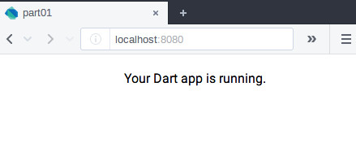

We are going to start really simple. Let’s create the files that we will need to start writing our program usig the stagehand program that will generate the initial files necesary to start writing our app.
stagehand web-simple
After running the command we get this files:
.
├── analysis_options.yaml
├── CHANGELOG.md
├── LICENSE
├── pubspec.yaml
├── README.md
└── web
├── favicon.ico
├── index.html
├── main.dart
└── styles.css
Let’s explain what this files do:
index.html is the entry point of our app from here we call the main.dart file.main.dart this is the entry point of all the functionalities that we will add to the text editor.styless.css is just a style cheat, nothing special here.favicon.ico is just a favicon, nothing special here.pubspec.yaml here are some information about our project that is use by the pub package manager
such a the dependecies that we need for our app.README.md here you can add general information about your program for the audience.LICENSE here you add the license for your program.analysis_options.yaml here you can add options for the analazer. The analazer performs static analysis and
allows you to find problems before executing a single line of code.To get all the dependecies run this command on the root of the project (where the pubspec.yaml is located):
pub get
To try the app run this command on the root of the project:
pub serve
Got to http://localhost:8080/ in your browser and you will see this:

Check the source code.
This is the end of part01.